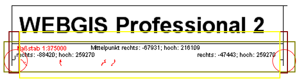
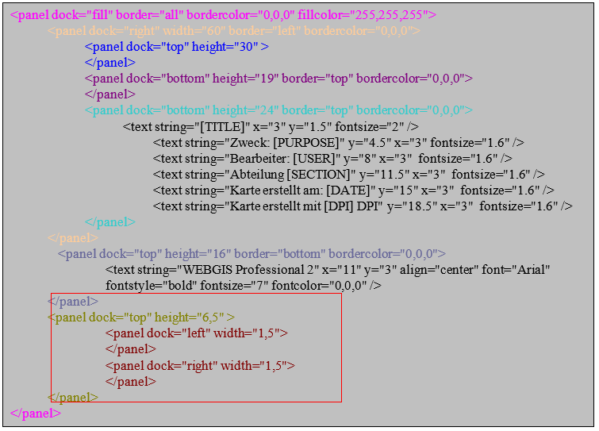
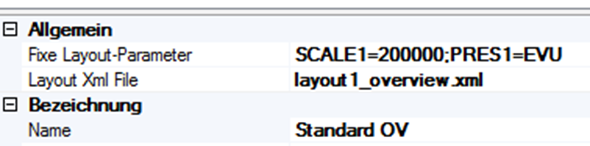

Drucklayouts¶
Diese Dokumentation erläutert anhand eines Beispiels den Aufbau einer benutzerdefinierten Layout-XML-Datei, die verwendet werden kann. Das folgende Beispiel enthält alle Parametrierungsmöglichkeiten:

Jede Seite (z. B. A4 Hochformat, A3 Querformat usw.) wird grundsätzlich in frei definierbare sogenannte Panels unterteilt. Pro Seite können beliebig viele Panels definiert werden. In diesen Panels können unter anderem Karten, Legenden, Maßstabsleisten, Texte, Linien und Bilder eingebunden werden.
Um ein bestimmtes Panel innerhalb des XML-Dokuments leichter auffindbar zu machen, werden die hier gezeigten Farben entsprechend im XML-Text verwendet.

Das XML-Dokument ist so aufgebaut, dass jede Seite – unabhängig von ihrer Größe – auf ein benutzerdefiniertes Layout zurückgreift und den verfügbaren Platz mit Panels füllt. Der restliche freie Platz auf der Seite wird automatisch mit Karteninhalten ausgefüllt.
Bemerkung
Prinzipiell wäre es auch möglich, den Bereich der Karte fest vorzugeben. In diesem Fall würde jedoch die Nutzung unterschiedlicher Papierformate keinen Sinn ergeben. Daher beschreibt diese Dokumentation ausschließlich, wie der jeweils verbleibende Platz dynamisch mit der Karte befüllt wird.
Jedes benutzerdefinierte Layout beginnt mit dem unten dargestellten XML-Tag. Dieses wird bei den nachfolgenden Panels aus Gründen der Übersichtlichkeit nicht jedes Mal erneut aufgeführt.
<?xml version="1.0" encoding="iso-8859-1"?>
<layout>
</layout>
Der Layout Tag kann folgende Attribute enthalten:
Attribut |
Beschreibung |
|---|---|
|
Hier kann der EPSG-Code für ein Koordinatensystem angegeben werden. Koordinaten im Layout (z. B. Eckkoordinaten) werden in diesem System geführt.
Beispiel: |
|
Legt das Format der Koordinaten fest. Mögliche Werte sind |
|
Definiert den Seitenrand für das Layout in Millimetern [mm]. |
|
Legt fest, in welchem Format das Druckbild erstellt wird. Standardmäßig wird |
|
Hier kann ein Wert in MB angegeben werden. Überschreitet das PDF diesen Wert, erfolgt die Ausgabe automatisch als |
Das Panel¶
Das Layout besteht aus sogenannten Panels, die ineinander verschachtelt werden können und mit verschiedenen Elementen wie Texten, Bildern oder Kartenelementen gefüllt werden. Jedes Panel wird im XML folgendermaßen definiert:
<panel dock="fill" border="all" fillcolor="255,255,255" bordercolor="0,0,0">
</panel>
Varianten von Panels:
fillDas Panel wird vollständig ausgefüllt und dient dazu, innerhalb dieses Panels weitere Objekte oder Panels darzustellen.bottomDas Panel wird im übergeordneten Panel unten platziert.topDas Panel wird im übergeordneten Panel oben platziert.leftDas Panel wird im übergeordneten Panel links platziert.rightDas Panel wird im übergeordneten Panel rechts platziert.
Jedes Panel kann zusätzlich mit folgenden Eigenschaften versehen werden:
Eigenschaft |
Beschreibung |
|---|---|
|
Zeichnet einen Rahmen um das Panel. Mögliche Werte: |
|
Füllt das Panel mit einer Hintergrundfarbe im RGB-Format (z. B.: |
|
Zeichnet den Rahmen mit einer definierten Farbe im RGB-Format (z. B.: |
|
Legt die Breite des Panels in Millimetern fest. Nur für Panels vom Typ |
|
Legt die Höhe des Panels in Millimetern fest. Nur für Panels vom Typ |
Verschachteln von Panels¶
Um mehrere Panels korrekt verwenden zu können, müssen diese sinnvoll ineinander verschachtelt werden. Die Verschachtelung wird anhand des folgenden Beispiels erläutert.
Zuerst wird ein äußeres Panel definiert, das weiß gefüllt ist und einen umlaufenden Rand erhält:
<panel dock="fill" border="all" bordercolor="0,0,0" fillcolor="255,255,255">
</panel>
Innerhalb dieses äußeren Panels wird nun ein rechtes Panel erstellt. Es erstreckt sich über die gesamte Höhe und hat eine Breite von 60 mm sowie einen linken Rand:
<panel dock="fill" border="all" bordercolor="0,0,0" fillcolor="255,255,255">
<panel dock="right" width="60" border="left" bordercolor="0,0,0">
</panel>
</panel>
Innerhalb des rechten Panels befindet sich oben ein weiteres Panel mit einer Höhe von 30 mm:
<panel dock="fill" border="all" bordercolor="0,0,0" fillcolor="255,255,255">
<panel dock="right" width="60" border="left" bordercolor="0,0,0">
<panel dock="top" height="30">
</panel>
</panel>
</panel>
Am unteren Rand des rechten Panels werden zwei Panels eingefügt: Eines mit einer Höhe von 19 mm für das Energie-Steiermark-Logo und ein weiteres mit 24 mm für Texte. Beide Panels erhalten oben einen Rand:
<panel dock="fill" border="all" bordercolor="0,0,0" fillcolor="255,255,255">
<panel dock="right" width="60" border="left" bordercolor="0,0,0">
<panel dock="top" height="30">
</panel>
<panel dock="bottom" height="19" border="top" bordercolor="0,0,0">
</panel>
<panel dock="bottom" height="24" border="top" bordercolor="0,0,0">
</panel>
</panel>
</panel>
Vorsicht
Die Reihenfolge der Panels innerhalb des XML bestimmt deren Positionierung. Das zuerst definierte Panel mit dock=“bottom“ befindet sich unten. Das nachfolgende Panel mit dock=“bottom“ wird darüber platziert. Die Summe der Höhenangaben spielt dabei keine Rolle; die Panels werden nahtlos aneinander angeschlossen.
Zuletzt wird oberhalb, außerhalb des rechten Panels, noch ein weiteres Panel für die Kartenüberschrift erstellt. Dieses erhält eine Höhe von 16 mm und unten einen schwarzen Rand:
<panel dock="fill" border="all" bordercolor="0,0,0" fillcolor="255,255,255">
<panel dock="right" width="60" border="left" bordercolor="0,0,0">
<panel dock="top" height="30">
</panel>
<panel dock="bottom" height="19" border="top" bordercolor="0,0,0">
</panel>
<panel dock="bottom" height="24" border="top" bordercolor="0,0,0">
</panel>
</panel>
<panel dock="top" height="16" border="bottom" bordercolor="0,0,0">
</panel>
</panel>
Die Panels sind nun vollständig verschachtelt. Im nächsten Schritt können diese mit Texten, Bildern und vordefinierten Objekten gefüllt werden.
Texte einfügen¶
Texte werden innerhalb eines Panels mit folgender Syntax eingefügt:
<text string="webgis" x="11" y="3" align="center" font="Arial" fontstyle="bold" fontsize="7" fontcolor="0,0,0" />
Eigenschaften von Textelementen:
Eigenschaft |
Beschreibung |
|---|---|
|
Koordinaten der linken oberen Ecke des Textes, relativ zum Panel ( |
|
Vertikale Ausrichtung des Textes bezogen auf die definierten Koordinaten. Mögliche Werte sind Bemerkung Der Wert von |
|
Definieren Schriftart, Stil, Größe und Farbe des Textes. Beispiel: |
Folgendes XML-Beispiel zeigt einen Text im zuvor definierten top-Panel:
<panel dock="fill" border="all" bordercolor="0,0,0" fillcolor="255,255,255">
<panel dock="right" width="60" border="left" bordercolor="0,0,0">
<panel dock="top" height="30">
</panel>
<panel dock="bottom" height="19" border="top" bordercolor="0,0,0">
</panel>
<panel dock="bottom" height="24" border="top" bordercolor="0,0,0">
</panel>
</panel>
<panel dock="top" height="16" border="bottom" bordercolor="0,0,0">
<text string="Ihr Text hier" x="11" y="3" align="center"
font="Arial" fontstyle="bold" fontsize="7" fontcolor="0,0,0" />
</panel>
</panel>
Vordefinierte Texte einfügen¶
Im benutzerdefinierten Layout können auch vordefinierte Variablen verwendet werden, welche automatisch mit Werten aus dem Druckaufruf ersetzt werden. Diese Variablen müssen in eckigen Klammern angegeben werden.
Folgende vordefinierte Variablen stehen zur Verfügung:
Variable |
Beschreibung |
|---|---|
|
Kartenüberschrift |
|
Name des Erstellers |
|
Abteilung |
|
Verwendungszweck |
|
Seitengröße des Ausdrucks (z. B.: |
|
Qualität (Druckauflösung in DPI) |
|
Ausgabemaßstab |
|
Datum der Kartenerstellung |
|
Datum mit benutzerdefinierter Formatierung (z. B.: |
|
Name des Koordinatensystems der Karte |
|
EPSG-Code des Koordinatensystems der Karte |
|
Linke Koordinate mit 0 Dezimalstellen |
|
Linke Koordinate mit 1 Dezimalstelle |
|
Linke Koordinate mit 2 Dezimalstellen |
|
Rechte Koordinate mit 0 Dezimalstellen |
|
Rechte Koordinate mit 1 Dezimalstelle |
|
Rechte Koordinate mit 2 Dezimalstellen |
|
Untere Koordinate mit 0 Dezimalstellen |
|
Untere Koordinate mit 1 Dezimalstelle |
|
Untere Koordinate mit 2 Dezimalstellen |
|
Obere Koordinate mit 0 Dezimalstellen |
|
Obere Koordinate mit 1 Dezimalstelle |
|
Obere Koordinate mit 2 Dezimalstellen |
|
Mittelpunkt-Koordinate mit 0 Dezimalstellen |
|
Mittelpunkt-Koordinate mit 1 Dezimalstelle |
|
Mittelpunkt-Koordinate mit 2 Dezimalstellen |
Im folgenden XML-Beispiel werden mehrere dieser vordefinierten Variablen in das zweitunterste Panel auf der rechten Seite eingefügt:
<panel dock="fill" border="all" bordercolor="0,0,0" fillcolor="255,255,255">
<panel dock="right" width="60" border="left" bordercolor="0,0,0">
<panel dock="top" height="30">
</panel>
<panel dock="bottom" height="19" border="top" bordercolor="0,0,0">
</panel>
<panel dock="bottom" height="24" border="top" bordercolor="0,0,0">
<text string="[TITLE]" x="3" y="1.5" fontsize="2" />
<text string="Zweck: [PURPOSE]" x="3" y="4.5" fontsize="1.6" />
<text string="Bearbeiter: [USER]" x="3" y="8" fontsize="1.6" />
<text string="Abteilung: [SECTION]" x="3" y="11.5" fontsize="1.6" />
<text string="Karte erstellt am: [DATE]" x="3" y="15" fontsize="1.6" />
<text string="Karte erstellt mit [DPI] DPI" x="3" y="18.5" fontsize="1.6" />
</panel>
</panel>
<panel dock="top" height="16" border="bottom" bordercolor="0,0,0">
<text string="Ihr Titel hier" x="11" y="3" align="center" font="Arial"
fontstyle="bold" fontsize="7" fontcolor="0,0,0" />
</panel>
</panel>
Linien einfügen¶
Es gibt auch die Möglichkeit, Linien innerhalb eines Panels zu zeichnen, indem man die Koordinaten der Linien angibt. Als Beispiel dienen hier die Begrenzungslinien zur Koordinatenangabe:
Zuerst erstellen wir das Panel, in dem diese zu sehen sein sollen. Dazu brauchen wir zuerst ein Panel unterhalb des Überschriften-Panels und darin je ein Panel links und rechts ausgerichtet.
Jetzt werden die Linien innerhalb dieser Paneele gezeichnet:

Der restliche Platz dieses Panels soll jetzt gefüllt und dann noch mit den Koordinaten und dem Maßstab versehen werden:

Bilder einfügen¶
Bilder, die sich im Unterordner \Viewer\ in einem weiteren Unterordner befinden, können ebenfalls in einem benutzerdefinierten Layout eingebunden werden. Dazu wird folgende Syntax verwendet:
<image src="img/logos/e_steiermark_kl.png" x="13" y="1" width="35" height="8" />
Die Parameter x und y stehen für den Einfügepunkt des Bildes innerhalb des Panels (0,0 entspricht der linken oberen Ecke des Panels). width und height definieren die Größe des Bildes. Das Bild wird automatisch auf diese Maße verzerrt. Um das korrekte Seitenverhältnis beizubehalten, sollten Breite und Höhe entsprechend berechnet werden.

Übersichtskarte einfügen¶
Die Übersichtskarte kann mit folgender Syntax in einem Panel eingefügt werden:
<ovmap x="13" y="10" width="35" height="19" border="all" bordercolor="150,150,150" />
Die Angaben für Koordinaten (x, y), Breite (width), Höhe (height) sowie die Randdarstellung (border und bordercolor) funktionieren dabei genau wie bei Panels und Bildern beschrieben.
Zur Vervollständigung unseres Beispiels fügen wir nun noch das untere Panel hinzu, in dem die unteren Koordinaten angegeben werden (analog zum oberen Koordinaten-Panel). Ebenfalls integriert werden das Energie-Steiermark-Logo sowie die Angabe der Homepage.
Die Syntax für dieses Panel sieht folgendermaßen aus:

Legende einfügen¶
Die Legende wird so eingefügt, dass sie den restlichen Platz des rechten Panels vollständig ausfüllt. Dazu wird folgendes XML verwendet:

Hauptkarte einfügen¶
Nachdem alle Panels rund um die Hauptkarte erstellt wurden, wird der restliche Platz mit einem abschließenden Panel gefüllt, das links und rechts jeweils einen Abstand erhält. In diesem Panel wird die Hauptkarte dargestellt.
Die korrekte Syntax lautet:
<panel dock="fill" border="all" bordercolor="0,0,0" fillcolor="255,255,255">
<panel dock="fill">
<panel dock="left" width="1.5" />
<panel dock="right" width="1.5" />
<map dock="fill" />
</panel>
</panel>
In diesem Beispiel wird ein Rand von jeweils 1,5 mm links und rechts neben der Hauptkarte erzeugt.
Maßstabsleiste einfügen¶
Innerhalb der Hauptkarte wird nun die Maßstabsleiste eingefügt sowie der Text ENERGIE STEIERMARK AG 2007.

Nordpfeil einfügen¶
Das Nordpfeilsymbol dient dazu, die Ausrichtung der Karte zu verdeutlichen und die Richtung Norden anzuzeigen. Es ist besonders hilfreich, wenn der Druckausschnitt der Karte rotiert wird. Dadurch bleibt die Orientierung unabhängig von der Rotation des Kartenlayouts erhalten. Die Position und Größe des Symbols sowie die Hintergrundfarbe können individuell angepasst werden.
<northarrow x="4" y="7" width="7" height="8.5" fillcolor="255,255,255"/>
Benutzerdefinierte Texte¶
Benutzerdefinierte Texte sind Platzhalter, die vom Benutzer direkt im Druckdialog befüllt werden können.
<layout>
<variables>
<variable name="TITLE" alias="Kartenüberschrift" />
<variable name="PURPOSE" alias="Verwendungszweck" />
<variable name="TEXT1" alias="Text 1" default="text1!" maxlength="12" />
</variables>
</layout>
Benutzerdefinierte Texte besitzen folgende Eigenschaften:
Attribut |
Beschreibung |
|---|---|
|
Interne Bezeichnung des Platzhalters, der im Layout verwendet wird. |
|
Name, der dem Benutzer im Druckdialog angezeigt wird. |
|
Standardwert, der verwendet wird, wenn der Benutzer keinen Wert eingibt. |
|
Maximale Anzahl der zulässigen Zeichen für diesen Text. |
Übersichtsfenster¶
Mit den Übersichtsfenstern können in einem Drucklayout beliebig viele Übersichtskarten positioniert werden. Der Unterschied zur „normalen“ Übersichtskarte besteht darin, dass für Übersichtsfenster ein fixer Maßstab im Layout angegeben wird. Übersichtsfenster und Kartenfenster teilen sich immer denselben geografischen Mittelpunkt.
<panel x="82" y="1" width="60" height="60">
<text string="1:10.000" x="1" y="0" font="Arial" fontcolor="0,0,0" fontsize="6.0" />
<overview_window dock="fill" scale="40000" presentations="Kataster,EVU">
<image src="img/hotspots/hotspot3.gif" width="10" height="10" align="center" />
</overview_window>
</panel>
Der <overview_window>-Tag hat neben den üblichen Positionierungsattributen auch folgende Eigenschaften:
scalegibt den fixen Maßstab für das Übersichtsfenster an.presentationserlaubt es, Darstellungsvarianten anzugeben.
In den Übersichtsfenstern wird grundsätzlich immer die aktuelle Karte dargestellt. Die Darstellung der Übersichtskarte kann somit über Darstellungsvarianten zusätzlich gesteuert werden. Im oben angeführten Beispiel wird im Mittelpunkt des Fensters ein Hotspot-Symbol eingefügt, welches den geografischen Mittelpunkt der Karte anzeigt.
Maßstab und Darstellung können alternativ auch über Platzhalter im Layout definiert werden:
<overview_window dock="fill" scale="[SCALE]" presentations="[PRESENTATION]" />
Hier MUSS dann allerdings im CMS eine Übersetzung der Parameter angegeben werden:
Die fixen Layout-Parameter werden hier (ohne [ und ]) mit ; getrennt zugewiesen.
Datenbankanbindung¶
Sollten Werte ins Layout eingefügt werden, die aus einer Datenbank stammen, müssen am Ende eines Layout-Dokuments (innerhalb des <layout>-Tags) die Verbindungen zu den Datenbanken definiert werden:
<dbconnections>
<dbconnection id="0" connectionstring="C:\ArcIMS\ww_web.mdb" />
<dbconnection id="1" connectionstring="SQL:server=localhost;database=db1;uid=1;pwd=2" />
</dbconnections>
Der Wert für die id ist frei wählbar (Zahl oder Text), muss jedoch für jede Verbindung eindeutig sein!
Innerhalb des Layouts kann dann über den Tag <dbtext> auf diese Datenbankverbindungen zugegriffen werden:
<dbtext connectionid="0" sql="SELECT Einkehrmöglichkeiten FROM Routen WHERE RoutenID=[HEADERID]" x="1" y="0" fontsize="1.8" wrap="true" />
Das Attribut connectionid sorgt für die Verbindung mit den oben definierten Connections. Die im Attribut sql definierte SQL-Klausel muss so definiert werden, dass genau ein Wert zurückgeliefert wird.
Das Attribut wrap="true" sorgt für einen automatischen Zeilenumbruch, wenn der Text zu lang wird.
[HEADERID]¶
Der hier angeführte Platzhalter [HEADERID] bezieht sich auf einen Wert aus einem vom Benutzer ausgewählten Objekt eines Themas/Layers. Um dem Anwender eine Auswahl zu ermöglichen, muss für das gewünschte Thema im CMS eine Abfrage existieren, die auch der entsprechenden Karte hinzugefügt werden muss.
Als Beispiel soll hier eine Grundstücksabfrage dienen. Das entsprechende Feld, welches als HEADERID dienen sollte, heißt beispielsweise „KEY“. Unterhalb des <dbconnections>-Tags ist noch Folgendes einzutragen:
<dbconnections>
<headerid query="grundstuecke" field="NR" />
<dbconnection id="0" connectionstring="SQL:…" />
</dbconnections>
Das Attribut query des <headerid>-Tags gibt die URL (im CMS parametriert) der Abfrage an. Im Attribut field wird das Feld angegeben, das als HEADERID in den SQL-Statements dienen soll.
Wenn der Anwender nun eine Karte mit diesem Layout drucken möchte, kann er aus Objekten auswählen. Zur Auswahl stehen alle Objekte aus der oben parametrierten Abfrage, die im Ausdruck sichtbar sind – hier beispielsweise alle Grundstücke im Druckausschnitt. Der Anwender kann daraus genau eines auswählen.

Datenbanktexte können somit von einem in der Karte befindlichen Objekt abhängig gemacht werden.
Bedingungen (Constraints)¶
Über Bedingungen können einzelne Tags eines Layouts ausgeblendet werden, wenn eine Bedingung zutrifft bzw. nicht zutrifft. Die möglichen Bedingungen werden, analog zu den Datenbankverbindungen, am Ende des Dokuments (innerhalb des <layout>-Tags) definiert:
<constraints>
<constraint id="noHeaderId" value="[HEADERID]" tester="" />
<constraint connectionid="0" id="legendpic1"
value="SELECT Wegkategorie FROM Routen WHERE RoutenID=[HEADERID]" tester="1" />
<constraint connectionid="0" id="legendpic2"
value="SELECT Wegkategorie FROM Routen WHERE RoutenID=[HEADERID]" tester="2" />
<constraint connectionid="0" id="legendpic3"
value="SELECT Wegkategorie FROM Routen WHERE RoutenID=[HEADERID]" tester="3" />
</constraints>
Bedingungen (Tag <constraint>) bestehen immer aus folgenden Attributen:
id: eindeutige Identifikation der Bedingungvalue: der zu prüfende Werttester: Wert, mit dem der Inhalt vonvalueverglichen wird
Als value kann auch eine SQL-Abfrage angegeben werden, wenn zusätzlich das Attribut connectionid gesetzt ist.
Um nun einzelne Tags (panel, text, image, dbtext usw.) von einer Bedingung abhängig zu machen, werden die Attribute if_constraint (wird eingefügt, wenn Bedingung zutrifft) oder if_not_constraint (wird eingefügt, wenn Bedingung nicht zutrifft) verwendet.
Beispiele:
<panel if_not_constraint="noHeaderId" dock="bottom" height="26" border="all" bordercolor="0,0,0">
Dieses Panel wird nur eingefügt, wenn die Bedingung noHeaderId nicht zutrifft, d. h. wenn der Wert [HEADERID] nicht leer ist.
<image if_constraint="legendpic1" x="0" y="0" width="5" src="vww_gelb.gif" height="17" />
<image if_constraint="legendpic2" x="0" y="0" width="5" src="vww_rot.gif" height="17" />
<image if_constraint="legendpic3" x="0" y="0" width="5" src="vww_blau.gif" height="17" />
Diese Bilder werden jeweils nur dann eingefügt, wenn die entsprechende Bedingung zutrifft.
Module (Include Dateien)¶
Treten innerhalb eines Layout-Dokuments bestimmte Elemente häufiger auf (sogenannte „Tag-Bausteine“), können diese zur besseren Wartbarkeit in separaten Include-Dateien abgelegt werden. Solche Bausteine müssen innerhalb eines <include>-Tags in der Include-Datei definiert sein. Diese Dateien müssen sich im Verzeichnis etc\layouts\ (relativ zur WebGIS-Installation) befinden.
Beispiel einer Include-Datei namens layout_vogis_wander_legende.xml:
<include>
<!-- untere zeile / Legende -->
<panel dock="bottom" height="7.5" border="top" bordercolor="0,0,0">
<panel dock="left" width="1.5" />
<panel dock="left" width="33">
<image src="img/vogis_logo.gif" width="33" height="7" />
</panel>
<panel dock="left" width="33">
<text string="www.vorarlberg.at/vorarlberg/bauen_wohnen/bauen/vermessung_geoinformation/start.htm"
fontsize="1.8" wrap="true" x="0" y="0" />
</panel>
</panel>
</include>
Die Einbindung einer solchen Datei erfolgt im Layout-Dokument über den Tag <include> mit dem Attribut file, das den Dateinamen der Include-Datei angibt:
<include file="layout_vogis_wander_legende.xml" />
Koordinatensystem¶
Sollen Koordinaten in einem anderen Koordinatensystem ausgegeben werden, muss dies im <layout>-Tag der XML-Datei angegeben werden. Dies erfolgt über folgende Attribute:
<layout coord_srs="4326" coord_format="dms">
Hier werden beispielsweise die Koordinaten im WGS 84-System ausgegeben. Das Ausgabeformat ist dabei Grad, Minuten und Sekunden (dms). Alternativ können die Koordinaten mit dem Attribut coord_format="dm" auch in Grad und Minuten ausgegeben werden.
Die folgenden Platzhalter stehen für Koordinatenangaben zur Verfügung, wobei die Zahl am Ende die Anzahl der Dezimalstellen angibt:
[COORD_CENTER_X_0]
[COORD_CENTER_Y_0]
[COORD_CENTER_X_1]
[COORD_CENTER_Y_1]
[COORD_CENTER_Y_2]
[COORD_CENTER_X_3]
[COORD_CENTER_Y_3]
[COORD_LEFT_0]
[COORD_LEFT_1]
[COORD_LEFT_2]
[COORD_LEFT_3]
[COORD_RIGHT_0]
[COORD_RIGHT_1]
[COORD_RIGHT_2]
[COORD_RIGHT_3]
[COORD_BOTTOM_0]
[COORD_BOTTOM_1]
[COORD_BOTTOM_2]
[COORD_BOTTOM_3]
[COORD_TOP_0]
[COORD_TOP_1]
[COORD_TOP_2]
[COORD_TOP_3]
Das Attribut coord_format erlaubt folgende Werte:
dms: Ausgabe in Grad, Minuten, Sekundendm: Ausgabe in Grad und Minuten
Wird coord_format nicht angegeben, erfolgt die Ausgabe der Koordinaten als Dezimalwert.
Das Attribut coord_srs definiert das Koordinatensystem (z. B. 4326 für WGS 84).
Vorsicht
Es muss dafür gesorgt werden, dass im CMS ein entsprechendes Koordinatensystem parametriert ist.
Sub-Pages¶
Mit Hilfe von Subpages lassen sich mehrseitige PDF-Dateien erzeugen. So kann beispielsweise die Legende auf einer zweiten Seite gedruckt werden, oder es kann eine Übersichtsseite erstellt werden (z. B. eine Übersichtskarte auf einer zweiten Seite mit einem Übersichtsfenster, siehe oben).
Die Parametrierung der Subpages erfolgt in der Layout-XML-Datei:
<layout>
<subpages>
<subpage name="layout1_legend.xml" />
<subpage name="layout1_overview.xml" />
</subpages>
</layout>
Die weiteren Seiten werden einfach mit ihrem Namen angeführt.
Werden in einem der angeführten Layouts Platzhalter verwendet (wie beispielsweise bei den Übersichtsfenstern), müssen diese im CMS übersetzt und als Parameter angegeben werden.
Beim Plotserver können diese Parameter über die Url mitgegeben werden, zB:
http://localhost/webgis4/plotservice.aspx?bbox=-18728.8693937747,213438.796875772,-17929.4201750753,214761.687500797&psid=ole¶m=GEMNR=62212-1606/1|darstellungsvariante=flaewi;strom=on|layoutparameters=SCALE1=200000;PRES1=EVU